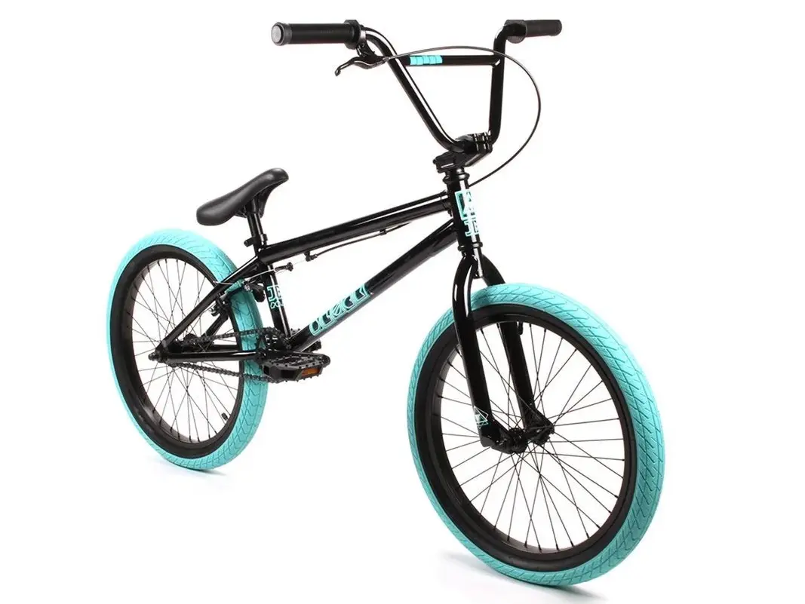
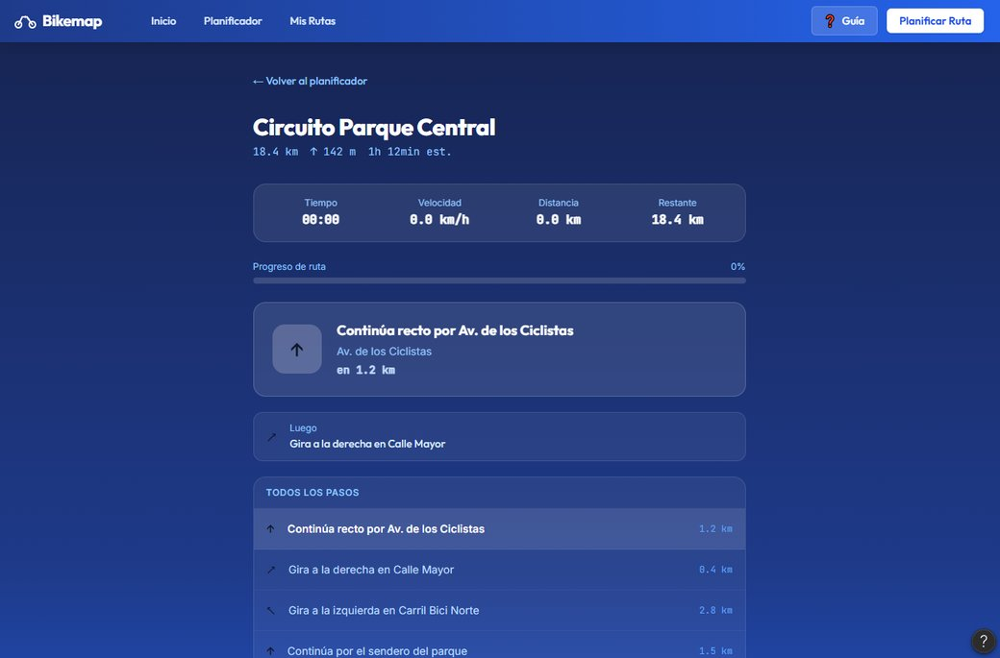

Encuentra tu ruta
Explora rutas ciclistas de tu ciudad y encuentra caminos que se adapten a tu destino.
Explorar rutasExplora la ciudad sobre dos ruedas
Ingresa un origen y un destino para consultar rutas en bicicleta. Elige el recorrido que mejor se ajuste a tu viaje y sigue indicaciones paso a paso.
Planificar mi ruta Conocer BikeMapPresentación del proyecto BikeMap; esta página no calcula rutas en tiempo real.


Tu compañera para recorrer la ciudad
BikeMap ayuda a ciclistas a buscar recorridos entre un punto de origen y su destino, y a elegir una ruta adecuada según sus necesidades de viaje.
Consulta rutas, recibe indicaciones paso a paso durante la navegación y guarda tus recorridos favoritos para volver a utilizarlos.
La información clara y accesible te permite concentrarte en el camino, incluso con indicaciones por voz.
Descubre nuevas rutas, conoce tu ciudad y pedalea hacia una movilidad más sostenible.
Explora rutas ciclistas de tu ciudad y encuentra caminos que se adapten a tu destino.
Explorar rutasDescubre nuevas calles, conecta distintos puntos de la ciudad y planifica tus recorridos.
Ver el mapaElige la bicicleta para tus desplazamientos y contribuye a una movilidad más sostenible.
Conoce los beneficiosSelecciona una opción para conocer las alternativas disponibles.
Tu recorrido, en tres pasos
Indica un origen y un destino para consultar rutas en bicicleta.
Selecciona el recorrido que mejor se ajuste a tus necesidades de viaje.
Sigue indicaciones paso a paso durante el trayecto hasta llegar a tu destino.
US001 · Búsqueda de Rutas
Ingresa un origen y un destino para visualizar las opciones de ruta.
US003 · Guardar rutas
Ingresa una ubicación inicial y una ubicación de destino para guardar tu recorrido.
Todavía no tienes rutas guardadas.

“Planifica el trayecto. Disfruta el camino”.
BikeMap reúne la búsqueda de rutas, la navegación paso a paso y el guardado de recorridos favoritos.
Demostración del formulario
Completa los campos con datos de ejemplo para recorrer la demostración. El prototipo no calcula una ruta ni envía solicitudes.
Este formulario no guarda datos. No ingreses información personal real.